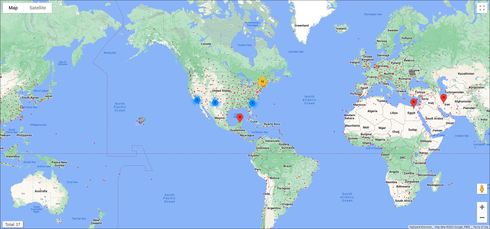
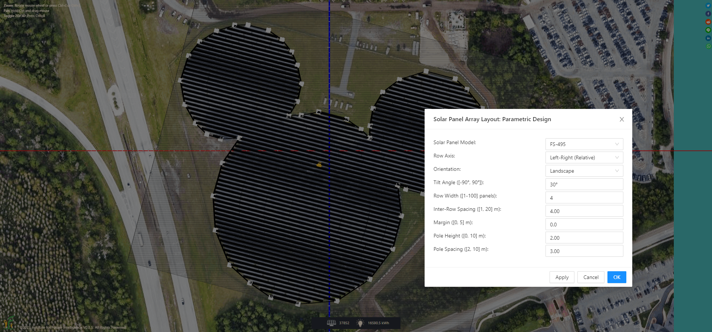
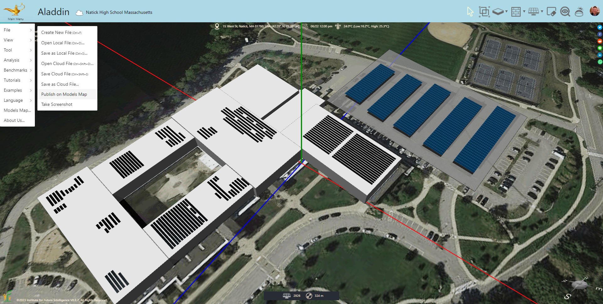
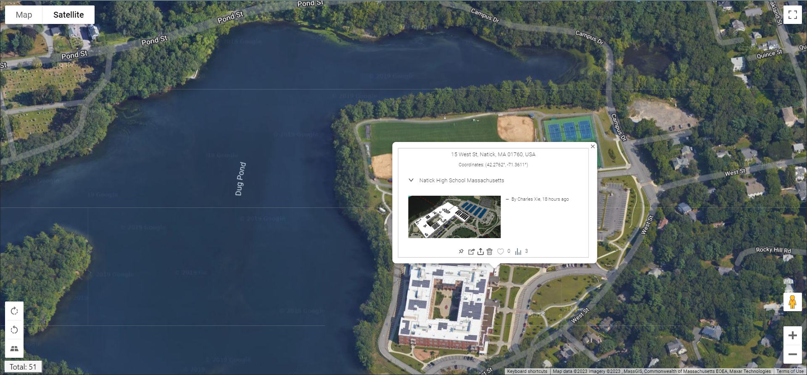
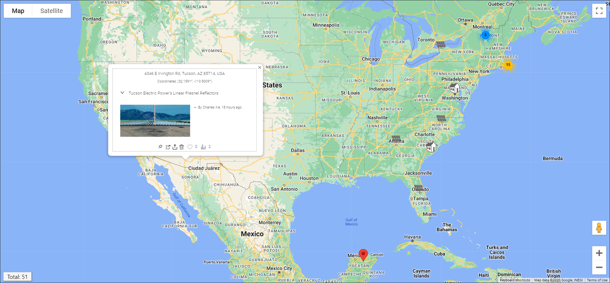

Integrating GIS and CAD to turn Google Maps into a Design Lab
How Aladdin makes Google Maps a worldwide canvas for climate-aware engineering design, real-world solar and building modeling, and shared design communities.
Aladdin supports users to model and design projects in the real world. This is enabled by the integration of geographic information system (GIS) into Aladdin, mainly through Google Maps. With this capacity, the entire Google Maps becomes a giant canvas in Aladdin for engineering design and analysis. This opens unlimited opportunities of learning and exploration for students from all over the world, especially in civil engineering and renewable energy engineering that are geographically based in nature. In this article, I will walk you through the main features of Aladdin that support the design of real-world projects.
Let's begin with a short video that shows how you can search for a model published on Google Maps embedded in Aladdin (referred to as the Models Map), open it, and interact with it using all the design, simulation, and analysis tools provided by Aladdin.
Note that the 3D objects shown in the above video are full CAD models in Aladdin that can be edited using its design and construction environment and analyzed using its simulation and visualization engines by anyone who accesses the models. The following video further illustrates that the solar panels driven by sun-tracking systems situated on top of the satellite image can actually rotate like sunflowers as the time of the day changes (unlike 3D objects in Google Maps that are static).
Leveraging worldwide weather data for climate-aware modeling and design
Aladdin has incorporated weather data from more than 1,000 locations around the world, lending considerable accuracy to building energy and renewable energy simulations. When you set a location for your design, Aladdin will automatically use the weather data from the nearest station. As a result of the dense sampling of weather data, Aladdin's building energy simulation engine is able to predict qualitatively correct (and even quantitatively accurate results) to achieve climate awareness. For instance, it will show that a house located in Florida consumes more energy for cooling than for heating throughout the year and a house located in New York consumes more energy for heating than for cooling throughout the year. More weather data will be included over time to improve the global coverage to support students from all over the world to design solutions suitable for their climates.

Importing satellite images into models as drawing canvases
To make the modeling of existing structures and the design of new structures in the real world easier, you can import a satellite image into a CAD model to provide visual references for drawing and contextualizing your model. The satellite image will be laid on the ground in the model. Aladdin ensures that the dimension of a CAD element equals the dimension of its real-world counterpart (except for heights that Google Maps do not currently provide, which you may have to manually estimate using images from the Street View). The following image shows a polygon drawn on top of a satellite image to match the shape and size of a solar farm in the real world (which in this case is the Mickey Mouse Solar Farm in the Walt Disney World Resort in Orlando, Florida). A parametric design tool is then used to generate the layout of solar panels within the polygon.

Publishing models on the map
Once you have completed a model or a design, you may want to distribute to those who may be interested in your work. You certainly can send a link to your work, but a better way to share your model is to publish it on the Models Map provided by Aladdin. To do so, you need to first save the model on the cloud (assuming that you have already created an account in Aladdin, which is automatic when you press the Sign In button at the upper-right corner of Aladdin). After you save the file on the cloud, you can then use "File > Publish on Models Map..." under the Main Menu to publish it.

Aladdin users can see published models when they open the Models Map. In a sense, the Models Map provides a repository of models organized in the form of a map for users to rapidly explore existing solutions in any area of interest.

To update the model, you just need to update the file on the cloud using "File > Save Cloud File" — there is no need to do anything with the Models Map. To remove a published model, you just need to find its marker on the Models Map, hover the mouse over it, and then click the Trash Bin icon on the popup window.
Building online communities of designers
A community of practice is a group of people who "share a concern or a passion for something they do and learn how to do it better as they interact regularly." Communities of practice support social learning. We envision that the Models Map can provide a platform to support communities of designers and modelers who are interested in renewable energy and building energy projects in the real world. The Models Map also provides basic social media features such that users can like and share published models.

Conclusion
Countless studies have suggested that learning is most effective if it is connected to the real world in meaningful ways. By seamlessly integrating GIS and CAD, Aladdin provides a powerful engineering environment for students to explore and design solutions to authentic real-world problems that matter to them.
← Back to Aladdin